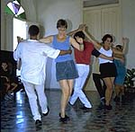

Salsa
Learning Salsa
In the early 90s, salsa was primarily taught in the studios but not in the clubs as is done now. Latin clubs typically offer either free salsa lessons or salsa lessons for a small fee (usually $10.00 for a two hour class) much less than what it cost to take the same class in some private studios.
Getting Fancy
As a rule, beginning salsa students want to learn the fancy combinations and turns before they can properly execute the basics. This can be seen when teaching beginners: they constantly look over at the advanced students. This is where the instructor must control the students' eagerness to jump ahead.